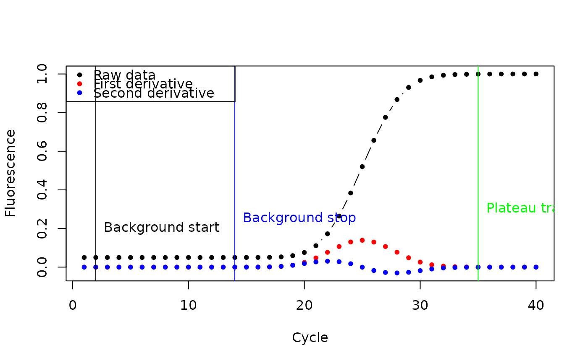
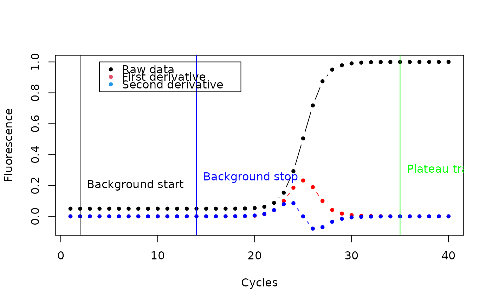

bg objectsplot-bg.RdDraws diagnostic plots of amplification reaction.
# S4 method for bg plot(x, what = 1:3, add = FALSE, indicators = TRUE, legend = TRUE, stan.labs = TRUE, plot.colors = c("black", "red", "blue"), ...)
| x | is a |
|---|---|
| what | is a vector specifying what should be plotted. |
| add | is a |
| indicators | is a |
| legend | is a |
| stan.labs | is a |
| plot.colors | is a vectors of colors used in plot. Must have length 3. |
| ... | Arguments to be passed further to the plot function, such as graphical parameters. |
plot.bg is simplified, ready-to-use version of
plot.der, which still can be used whenever more
flexible function is needed.
Stefan Roediger, Michal Burdukiewicz
#step-by-step plotting bg object res <- AmpSim(cyc = 1:40, Cq = 25) background <- bg.max(res) plot(background)#above is equivalent of below plot(rounder(inder(res)), xlab = "Cycles", ylab = "Fluorescence", pch = 20, legend = FALSE)legend(4, 1, c("Raw data", "First derivative", "Second derivative"), pch = rep(20, 3), col = c(1, 2, 4))